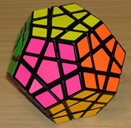

| PUZZLE | DISTCIPTION |
|---|---|
| 4 BY 4 CUBE | The 4 by 4 cube is a lot like the 3 by 3. Unlike the 3 by 3, the centers are able to move around and swich with each other. This charactoristic and many more makes this cube harder to solve than the 3 by 3. |
| 5 BY 5 CUBE | Since the 5 by 5 has an odd number of rows, the centers do not move. But the 5 by 5 is still challenging to solve. |
| 6 BY 6 CUBE | The 6 by 6 is one of the most challenging puzzles I've ever solved. Like the 4 by four, the centers move and like the 5 by 5, its challenging. In a way, the 6 by 6 is like the 4 by 4 and 5 by 5 combined. |
| MEGAMINX | Because of the Megaminx's unique shape, instead of six sides, it has twelve. Solving this puzzle is a lot like solving the 3 by 3 only with more steps added onto it. |
| PYRAMINX | While this pyramid shaped puzzle may look hard, the Pyraminx is accually one of the easiest puzzles to solve that I know of. This puzzle can be extremely simple compared to other puzzles |
| REX CUBE | While this puzzle is shaped like a cube, the REX Cube is completly different from a 3 by 3. Unlike the 3 by 3, this cube's peices turn at the corners instead of the sides. |
| SUPER SQUARE ONE | The Super Square One is one of the most unique puzzles I know of. When its solved,it's in the shape of a cube. When it's scrambled on the other hand, it takes many interesting shapes. I have never solved this puzzle before. |